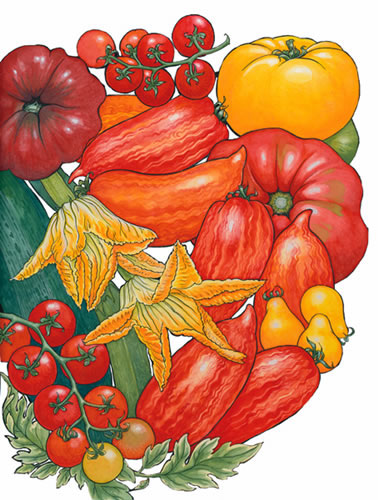
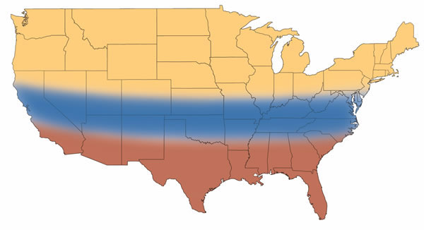
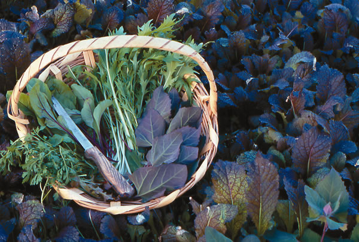
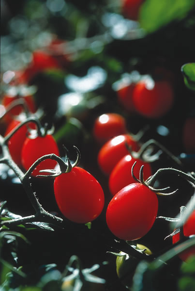

Woodcocks and redwing blackbirds are calling, reassuring us that warmer days are on the way. Start early greens such as mustard, mesclun mix, arugula, spinach, lettuce and cilantro in cold frames or a greenhouse bed. Prune fruit trees, fertilize, and weed berry canes and asparagus. (Wet spring soil makes for easy weeding.)
Once your garden has thawed, plant greens outside under row covers. Set out onion sets, seedlings and leeks as soon as the ground can be worked. Start tomatoes, brassicas, flowers and herbs in the greenhouse, cold frame or under grow lights. Transplant tomato and pepper plants into larger pots before their roots become crowded. Start seedlings of cucumbers, winter and summer squash, melons and gourds in early May, about four weeks before transplanting into warm, frost-free soil. Crocuses and snowdrops make way for early narcissus. In the blink of an eye, the tomato seedlings will have grown another 6 inches.
Roberta Bailey, Fedco Seeds, Waterville, Maine
April is for planting. Start chard and early summer lettuces such as Sweet Valentine or Thai Oakleaf 88. Harden off brassicas and transplant outside in the middle of the month.
Sow radishes, turnips, Asian greens, carrots and beets every other week. When lilacs are in full bloom, sow your first beans. Hill dirt around potato plants and watch for beetles. To control beetles, handpick them off or use Bacillus thuringiensis (Bt). Plant a fast-growing buckwheat cover crop on any soil that will not be planted for five weeks or more. If the weather is mild and soil temperature is above 65 degrees, sow corn and transplant a few early tomatoes, such as Glacier, under row covers.
Harvest greens, savor asparagus and prepare to weed. In May, switch to heat-resistant lettuces such as Anuenue and Slo-Bolt. Harvest garlic scapes and weed by midmonth. Sow peanuts, edamame, asparagus beans, black-eyed peas and other hot-weather crops. Stop to enjoy some early sugar peas while you weed.
Ira Wallace, Southern Exposure Seed Exchange, Mineral, Va.
Your garden should be actively growing by now. If plants appear stunted or yellow, you may have a nitrogen deficiency. This commonly occurs when you till in organic matter with a high carbon/nitrogen ratio, such as partially composted wood chips or sawdust. To get these plants green again, foliar feed (spray fertilizer on the leaves) once or twice a week. These symptoms also may result from too much water and poor drainage. (Dig up a plant and check the roots for damage.)
Start planting hot-weather crops such as southern peas, okra and eggplants. Tomatillos make a good succession planting after beans or similar spring crops begin to fade Toma Verde is a good variety. Fruit formation is deceptive, though the husks get large first, but you have to feel to determine which ones have the 1-inch fruits inside them. Plant some zinnias now. They will thrive through the summer and draw butterflies out of the sky like a magnet.
Bill Adams, Burton, Texas
This is a busy time of year for gardening! Harden off seedlings on mild, cloudy days, but watch for low night temperatures. The ground should be drier and workable by now. Dig in rotted leaves and compost a week or two before planting, and add other organic fertilizers if needed. This will activate soil microorganisms to release nutrients just in time for young seedlings. As the soil warms, plant cool-season vegetables and flowers, as well as potatoes and summer bulbs. Hold off planting the heat-lovers until nights are warmer.
Rake your lawn. Reseed any bare patches, especially where road salt has killed the grass. In shady areas of your property, try to seed before the trees have leafed out. The extra sunlight will give the grass a boost as it is sprouting.
Connie Dam-Byl, William Dam Seeds Ltd., Dundas, Ontario
There is so much to do every spring ?asparagus to pick, seeds that need a seedbed, transplanting, composting and weeding. This season, plan a pathway in and around your garden and resolve to walk a portion of it each day. In just a few steps, you will get more done than you thought possible. Also, using paths keeps you from packing down the garden soil.
If you havent planted spinach by now, look for varieties that are especially slow to bolt. Spinach responds to longer spring days by going to seed and may work better as a fall crop up North. Row covers will speed the growth of salad greens during cool
Bill McDorman, Seeds Trust, High Altitude Gardens, Hailey, Idaho
Spring has sprung, and we are in the height of planting season. Sow lettuce, spinach and other greens in the garden now. Follow with potatoes, perennial herbs, beets, chard and brassicas. Row covers will give a little temperature boost and provide bug barriers. Havent planted peas yet? You are not too late, but make sure to choose a wilt-resistant variety such as Cascadia or Oregon Sugar Pod II. Wait until the soil temperature reaches 60 degrees before sowing beans, corn, squash or cucumbers. When nights stay above 50 degrees, it is usually safe to plant basil, tomatoes, peppers and eggplant, but have row covers handy in case the temperature drops. Even though it is tedious, stay on top of the weeding it will lighten your load later on.
When planning what to grow this summer, remember to include any young gardeners in the family. Classic kid favorites are fast-growing radishes, peas, beans, tall sunflowers and pumpkins.
Rose Marie Nichols McGee, Nichols Garden Nursery, Albany, Ore., and Josh Kirschenbaum, Territorial Seed Co., Cottage Grove, Ore.
The arrival of spring in the Southwest is often accompanied by hot, dry winds. These may burn the tender tissues of germinating seedlings and newly transplanted tomatoes and peppers. For sturdier, more productive transplants, harden them off for 10 days by placing them outdoors several hours each day. Protect emerging seedlings by creating sunken planting areas in your garden, surrounded by earthen berms several inches high. Strategically placed rock piles on the western edges will redirect winds and also provide thermal mass, giving off heat when desert nighttime temperatures drop precipitously. Plant a hedge of sunflowers, amaranth and quinoa on the western edge of your garden to provide dappled afternoon shade later in the summer.
Consider planting regionally adapted varieties bred to thrive in Southwestern conditions. Examples are Blue Speckled or Sonoran Gold Bush tepary beans; Espanola Improved, the staple chile pepper of northern New Mexico; and Hopi Orange winter squash.
Emily Gatch, Seeds of Change, Henderson, Nev.
|
 RICK WETHERBEE Sow your tomato seeds now, and you’ll harvest a rich mixture of color and flavor later this year. |
 JOHNNY'S SELECTED SEEDS A basket of spring greens nestled in a bed of red romaine lettuce.Pepper grass, beet greens, mizuna (Japanese greens with a light mustard flavor) and red orach. |
 Cherry tomatoes are less likely to suffer from blossom-end rot than plants with larger fruits. |
|
 |
|
|